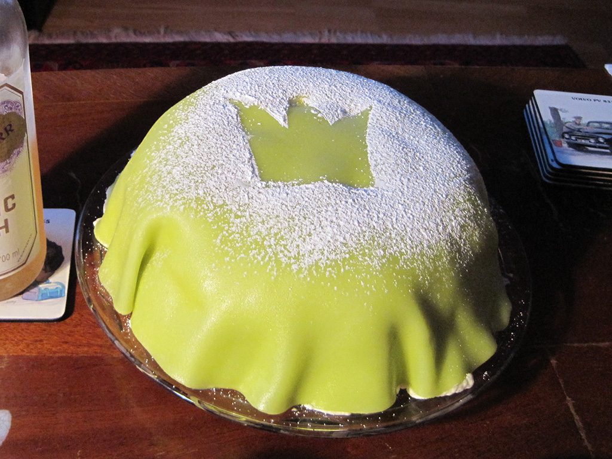
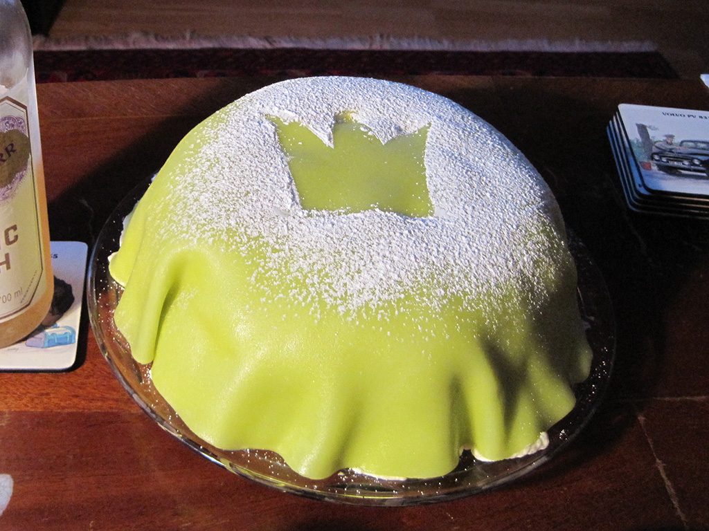

Hej allihopa! Välkommen till Skål! At Skål, we offer you the most authentic Swedish dishes that you can ever taste! Even if you may not have been on a trip to Sweden before, stepping into our restaurant for a bite will definitely guarantee your taste buds the most authentic virtual Swedish trip you will ever experience. Check out our menu below, and see what we have to offer! Hope to see you all dine in soon! Vi ses!


(Thin pancakes with choice of strawberries, nutella, blueberries, raspberries or blackberries)
(With choice of strawberries, nutella, blueberries, raspberries or blackberries)
(Open sandwiches with crisp bread, with ham, cucumber, cherry tomatoes and cream cheese)
(Egg salad with anchovies)
(Fermented milk - served with your choice of cornflake cereal, muesli or oatmeal)
(3 of each)


(Potato pancakes with Swedish lingon berries and bacon served on top)
(Yellow pea soup)
(Spinach soup with egg)
(Sailor's beef with onions)
(Sautéed bread with prawns, whitefish roe, Dijon mustard, mayonnaise and dill)
(Marinated Salmon with Dill Potatoes)
(Meatballs with Macaroni)


(Swedish meatballs, served with mashed potatoes, spinach salad and lingonberries)
(Meat stew)
(Blood pudding with lingonberries)
(Poached salmon)
(Beef and potatoes)
(Fried herring - comes with mashed potatoes, parsley butter and lingonberries)
(Comes with baked potato, spinach salad and lingonberries)
(Fermented herring - try it if you dare!)
(Salmon with champagne sauce)
(Stuffed meat dumplings)
 


(2 cinnamon buns - comes in 2)
(Princess Cake)
(Sticky chocolate cake)
(Strawberry cream cake)